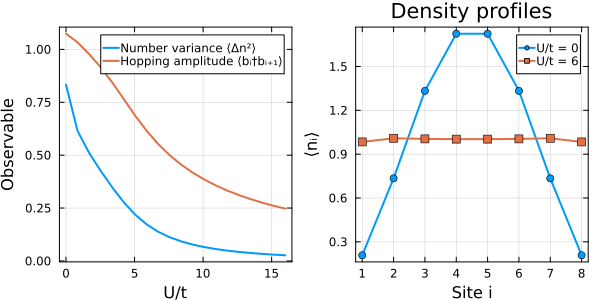
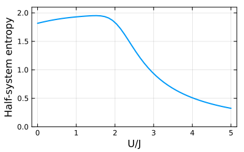

Bosons
Bosonic algebra and hilbert spaces
A single bosonic mode is defined with @boson. Adjoint ' acts as the creation operator, satisfying $[a, a^\dagger] = 1$.
using FermionicHilbertSpaces@boson aa * a' - a' * a == 1 # true@bosons b # defines an indexed array of modes. Modes on different sites commute.b[1]' * b[2] == b[2] * b[1]' # true(a' + a)^2 - a^2 - a'^2 # expressions are automatically simplified1I + 2*a†*aNumerical calculations require a finite local dimension $d$ (basis $|0\rangle, \dots, |d-1\rangle$). To define a truncated bosonic hilbert space for a mode or a field write
local_dim = 4Ha = hilbert_space(a, local_dim)labels = 1:8Hb = hilbert_space(b, labels, local_dim)65536-dimensional ProductSpace: 4×4×4×4×4×4×4×4)
Bosons(b[1], dim=4) ⨯ Bosons(b[2], dim=4) ⨯ Bosons(b[3], dim=4) ⨯ Bosons(b[4], dim=4) ⨯ Bosons(b[5], dim=4) ⨯ Bosons(b[6], dim=4) ⨯ Bosons(b[7], dim=4) ⨯ Bosons(b[8], dim=4)Example 1: Bose-Hubbard Hamiltonian
We set up the Bose-Hubbard Hamiltonian with hopping $t$ and onsite repulsion $U$:
\[H = -t \sum_{i=1}^{N-1} (b_i^\dagger b_{i+1} + \mathrm{h.c.}) + \frac{U}{2} \sum_{i=1}^N n_i(n_i - 1), \qquad n_i = b_i^\dagger b_i.\]
hc adds the Hermitian conjugate. This is number conserving, which we can exploit to reduce the Hilbert space dimension. Let's say we have 8 sites, and 8 particles. With a local dimension of 9, we will have no truncation error
N = 8M = 8local_dim = M + 1Hfull = hilbert_space(b, 1:N, local_dim)H = hilbert_space(b, 1:N, local_dim, NumberConservation(M))dim(Hfull), dim(H) # 43,046,721 -> 6435-dimensional(43046721, 6435)Note that one could also have used constrain_space(Hfull, NumberConservation(M)) but this requires iterating over all states and is usually slower.
Let's generate the matrix representations once to reuse in sweeps, and define the ground state calculation
n = [b[i]' * b[i] for i in 1:N]hop_sym = sum(b[i]' * b[i+1] + hc for i in 1:(N-1))int_sym = sum(n[i] * (n[i] - 1) for i in 1:N)#Precompute matrix representationsK = representation(hop_sym, H)D = representation(int_sym, H)n_ops = [representation(n[i], H) for i in 1:N]n2_ops = [representation(n[i]^2, H) for i in 1:N]hop_ops = [representation(b[i]' * b[i+1], H) for i in 1:(N-1)]using LinearAlgebra, Arpackfunction ground_state_analysis(U; t=1.0) M = -t * K + (U / 2) * D _, vecs = eigs(M; nev=1, which=:SR) psi = vecs[:, 1] density = [dot(psi, op, psi) for op in n_ops] variance = sum(dot(psi, n2, psi) - d^2 for (n2, d) in zip(n2_ops, density)) / N hopping = sum(dot(psi, op, psi) for op in hop_ops) / (N - 1) return (; density, variance, hopping)endground_state_analysis (generic function with 1 method)As $U/t$ grows, onsite repulsion suppresses particle fluctuations and hopping. The right panel shows how the open-boundary density profile flattens to 1 particle per site.
Us = range(0, 16; length=20)sweep = [ground_state_analysis(U) for U in Us];using Plotsp1 = plot(Us, [res.variance for res in sweep]; label="Number variance ⟨Δn²⟩", xlabel="U/t", ylabel="Observable", lw=2)plot!(p1, Us, [res.hopping for res in sweep]; label="Hopping amplitude ⟨bᵢ†bᵢ₊₁⟩", lw=2)p2 = plot(1:N, ground_state_analysis(0).density; label="U/t = 0", m=:circle, lw=2, xlabel="Site i", ylabel="⟨nᵢ⟩", xticks=1:N, title="Density profiles")plot!(p2, 1:N, ground_state_analysis(6).density; label="U/t = 6", m=:square, lw=2)plot(p1, p2; layout=(1, 2), size=(600, 300), frame=:box)
Example 2: Dipole-conserving boson model
This demonstrates how to handle a more complicated conservation law. The model math H = -J \sum_i (b_{i-1}† b_{i+1}† b_i b_i + h.c.) + U/2 \sum_i n_i(n_i-1) + ε n_1 Conserves $N = \sum n_i$ and $D = \sum i n_i$.
@bosons bfunction hamiltonian(b, N; J, U) -J * sum(b[i-1]' * b[i+1]' * b[i] * b[i] + hc for i in 2:(N-1)) + U / 2 * sum(b[i]'b[i] * (b[i]'b[i] - 1) for i in 1:N)endN = 6M = 6local_dim = M + 1 # Large enough to avoid truncation errorDtot = sum(1:N) # dipole of the uniform state |1,1,1,1,1,1>number_cons = NumberConservation(M)dipole_cons = NumberConservation(Dtot; weights=1:N) #Conserves $\sum w_i n_i$ with weights $w_i = i$.Hfull = hilbert_space(b, 1:N, local_dim)HN = hilbert_space(b, 1:N, local_dim, number_cons) # only N fixedHND = hilbert_space(b, 1:N, local_dim, number_cons * dipole_cons) # N and D fixedprintln("dim full = ", dim(Hfull), " | dim($M particles) = ", dim(HN), " | dim($M particles, $Dtot dipole) = ", dim(HND))dim full = 117649 | dim(6 particles) = 462 | dim(6 particles, 21 dipole) = 32Let's calculate half-system entropy for the ground state in this sector, sweeping over the ratio $U/J$. We define a partial trace map to the first half of the system, and then calculate the entropy of the reduced density matrix.
ptmap = partial_trace(HND => subregion([b[i] for i in 1:div(N, 2)], HND))Us = range(0, 5, 50)entropies = map(Us) do U H = hamiltonian(b, N; J=1.0, U) Ψ0 = eigvecs(representation(H, HND, :dense))[:, 1] sum(-λ * log(λ) for λ in eigvals(ptmap(Ψ0)) if λ > 1e-12)endplot(Us, entropies; xlabel="U/J", ylabel="Half-system entropy", legend=false, ylims=(0, 2.1), frame=:box, size=(400, 250), lw=2)
This page was generated using Literate.jl.